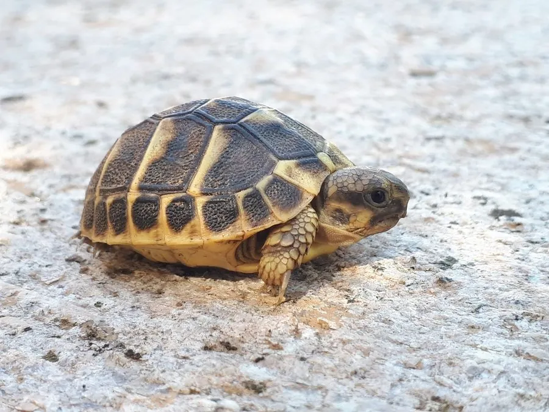

爬行动物 · 动物界
赫曼陆龟 Testudo hermanni

地中海地区的小型陆龟，背甲黄褐带黑斑，性格活泼、适应力强，是欧洲常见的陆龟和宠物龟，也是欧洲常见的宠物龟。
- 分类
- 门脊索动物门纲爬行纲目龟鳖目科陆龟科属陆龟属
- 栖息环境
- 地中海沿岸的干燥草地、灌丛、橄榄园与石质坡地
- 地理分布
- 地中海沿岸的意大利、法国南部、西班牙及巴尔干半岛
- 保护级别
- IUCN 近危（NT）；CITES 附录 II；非中国原产
物种志
赫曼陆龟背甲长 15–28 厘米，身体小巧结实，背甲高隆，呈黄褐或沙黄色，每个盾片中央有黑色斑块，边缘也镶黑；尾端有一枚明显的角质尾刺，腹甲淡黄并带深色斑纹，头部较小，吻端钝。它是欧洲最常见的小型陆龟之一。
它分布于地中海沿岸的意大利、法国南部、西班牙、巴尔干半岛等地，栖息于干燥的草地、灌丛和橄榄园，以青草、三叶草、多汁植物和果实为食，清晨和傍晚活动，午后躲避高温。每年繁殖季雌龟在沙土中产卵 3–8 枚，孵化期约 60–90 天，巢温影响后代性别。由于宠物贸易和栖息地破坏，野生赫曼陆龟数量下降，被列为近危物种并列入国际公约附录 II；它寿命可达数十年，饲养需要晒背和温差环境，在中国属于外来物种，不可随意放生。
形态与习性
- 食性青草、三叶草、多汁植物和果实
- 体长背甲长 15–28 cm
- 体重约 1–3 kg
- 寿命约 50–80 年
- 繁殖卵生，3–8 枚，孵化 60–90 天
趣味知识
- 赫曼陆龟尾端有一枚角质尾刺，是该种的重要识别特征。
- 它清晨和傍晚活动，午后会躲进草丛或洞穴避开高温。
- 赫曼陆龟是欧洲常见的宠物龟，但因捕捉野生个体，野外数量下降。